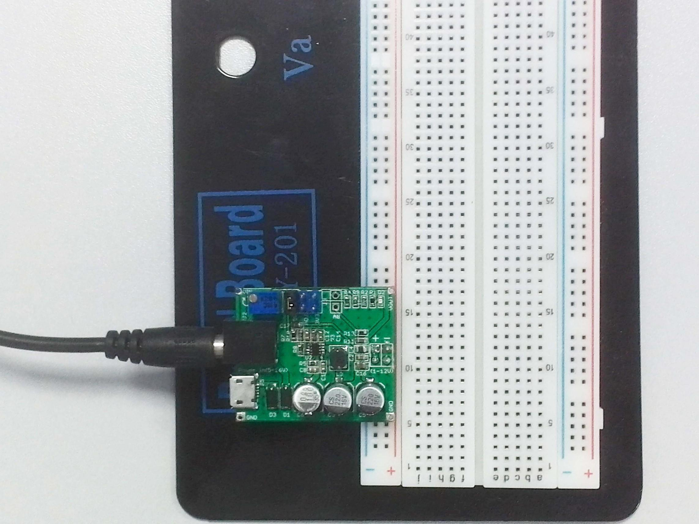

This is a DC/DC step-down voltage regulator that converts input voltage between 4.5V and 16V into a smaller voltage between 1V and 12V, capable of driving a 1.5A load with excellent line and load regulation.
In some projects, you might need different voltages (1-12V) for your devices. Without this kind of DC power source, you’ll find it time-consuming to buy a new one. The delay of project is so annoying. No worries! This module can accelerate prototyping, because you can get the voltage you need (such as 1.2V,1.8V,3.3V, 5V and 9V) as easy as blinking eyes.
Connect the module with Bread Board like following picture. It can quickly select 3.3V ,5V or an adjustable voltage output,through the jumper cap .When select the adjustable, it can be adjusted by the R12, to adjust the output voltage(1-12V)range. At the same time, you can use Arduino to read the A0 output voltage，to obtain the precise voltage value.
